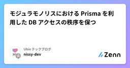

Ubie テックブログのフィード
https://zenn.dev/p/ubie_dev
Ubie株式会社のテックブログです。 採用情報：https://recruit.ubie.life/engineer
フィード

モジュラモノリスにおける Prisma を利用した DB アクセスの秩序を保つ 3
3
Ubie テックブログのフィード
Ubie で副業として Backend For Frontend (BFF) サーバーの開発を担当している nissy-dev です。今回は、モジュラモノリスアーキテクチャにおける Prisma を利用した DB アクセスの課題と、その課題に対処するために作成した lint ルールについて詳しく解説します。 NestJS と Prisma で作るモジュラモノリスユビーでは、BFF の GraphQL サーバーを実装する際に、NestJS を利用したモジュラモノリスを採用しています。この BFF サーバーは、マイクロサービスを呼び出すだけではなく、Prisma を使用したデータベー...
2日前

【1200万MAU】基盤システム刷新プロジェクトのQA戦略と実践（後編）
Ubie テックブログのフィード
はじめにUbieでQAエンジニアをしているMayです。Ubieは「テクノロジーで人々を適切な医療に案内する」をミッションに、AI問診エンジンや医療プラットフォームを提供しています。本記事では、toCサービスの基盤システム刷新プロジェクトにおけるQAプロセス、特にテスト戦略とリリース計画に焦点を当て、開発の裏側を紹介しています。このリプレイスは、既存機能の維持と品質確保が最重要課題でした。そこで前編では、クロスファンクショナルなスクラムチームで、①リスクストーミングによるリスク可視化、②テストレベルと責務の定義による品質保証体制の構築、③段階的リリース計画とMVP開発による早期の...
13日前
わかりみが深い！State of React Native 2024 から読み解くアプリ開発
Ubie テックブログのフィード
はじめにState of React Native 2024 が公開されました🎉2024年12月9日〜2025年1月8日の約1か月間にわたり、3,501人の開発者の声が集まりました。このレポートを読み最新のトレンド、技術的な進化、そして今後の展望を独断と偏見も含めてまとめてみました。アプリ開発の選択肢として 「React Native、アリかも？」 と思ってもらえたら嬉しいです🙇♂️ 個人的熱々ポイント🔥 Expoの世界観最も大きな変化の一つが Expo の台頭です。Expoは、React Native開発を簡単にするためのツールセットで、現在では約8割の開発者がE...
14日前
【1200万MAU】基盤システム刷新プロジェクトのQA戦略と実践（前編）
Ubie テックブログのフィード
はじめにUbieでQAエンジニアをしているMayです。Ubieは「テクノロジーで人々を適切な医療に案内する」をミッションに掲げ、医療機関向け、製薬企業向け、そして生活者向けに、AI問診エンジンや医療プラットフォームを提供しています。先日、月間1200万人を超えるユーザーが利用するtoCサービスを支える基盤システムについて、より拡張性の高いシステムへのリプレイスが完了しました。2024年1月から新システムの開発に着手し、半年におよぶ概念設計を経て、8月からは実装フェーズに移行。度重なるリリース計画の見直しを乗り越え、2025年1月に無事リリースを迎えました。本記事では、この長期...
18日前
QAエンジニアで「生成AI活用もくもく会」をはじめてみた
Ubie テックブログのフィード
こんにちは、UbieでQAエンジニアをしているackeyです。本記事では、弊社のQAエンジニア4名で始めた「生成AI活用もくもく会」の取り組みについて紹介します。生成AIをもっと業務に取り入れたい方、チームでの生成AI活用を推進している方の参考になれば幸いです。 はじめに：なぜもくもく会をはじめたのかUbieでは「生成AIネイティブ企業」を目標に掲げており、職種を問わずあらゆる業務で生成AI活用を推進しています。https://x.com/masa_kazama/status/1887036853666083264そのような背景もあり、QAエンジニア同士で、「生成AI時代の...
1ヶ月前
CloudSQL→AlloyDB移行とプラットフォームエンジニアリング
Ubie テックブログのフィード
始めにUbieでプラットフォームエンジニア兼SREをしているonoteruです。前々回の記事では、テンプレーティングツール「ubieform」を使ったプラットフォームエンジニアリングと、マルチクラスタ構成への移行について紹介しました。続く前回の記事では、Argo WorkflowからCloud Workflowsへの移行について紹介しました。そして今回は連載の最後として、「CloudSQLからAlloyDBへの移行」について紹介しようと思います。この移行は、前回までのマルチクラスタ化やワークフローの移行と同様、Ubieのプラットフォームをより信頼性が高く、運用負荷の少ないものへ...
1ヶ月前
DevinとCursorを比較してみてわかった、マルチタスクエンジニアにはDevinこそが救世主である理由
Ubie テックブログのフィード
はじめにこんにちは。Ubieでプロダクト開発エンジニア兼社内入稿システムのPOをしている、えんぴつと申します。「完全自律型AIソフトウェアエンジニア」Devinと、次世代AIコードエディタCursor。どちらも大きく注目されていますが、「実際どう使い分けるの？」「スクラムや日常業務に組み込むには？」と悩む方も多いのではないでしょうか。私自身の業務内容としては、プロダクトの実装Epicの立案やPBIの起票レビュー対応・ドキュメント整備採用関連やチーム外のステークホルダーとのアラインという感じで開発以外のタスクもなにかと抱えています。まとまった時間を取りづらいため、...
1ヶ月前
Ubie、Cursor Business導入しました！40名超の開発者で実感するAI開発支援の力強さ
Ubie テックブログのフィード
2025 年に入ってから AI の、特にエージェントによる支援を強く受けられる開発環境の導入を進められた方は多いのではないかと思っています。僕が働いている Ubie でも、先日お伝えした通り Cursor や Cline の検討を行っていました。https://zenn.dev/ubie_dev/articles/624c9034cc9b43そしてこのたび、 Ubie では Cursor の Business プラン を導入するに至りました。本記事では Ubie で Business プランを導入するに至るまでの検討・調整と、導入から二週間経過した上での所感をお伝えします。 AI...
1ヶ月前
Ubieのワークフロー移行とプラットフォームエンジニアリング
Ubie テックブログのフィード
始めにUbieでプラットフォームエンジニア兼SREをしているonoteruです。前回の記事では、テンプレーティングツール「ubieform」を使ったプラットフォームエンジニアリングと、マルチクラスタ構成への移行について紹介しました。昨年実施した以下の3つのインフラ移行の1つ目になります。単一のGKEクラスタからマルチクラスタ構成への移行Argo Workflowからフルマネージドなワークフローへの移行CloudSQLからスケーラブルで管理性の高いDB(AlloyDB)への移行今回はその続編として、2つ目のArgo WorkflowからCloud Workflowsへの...
1ヶ月前
TypeScript 5.8のerasableSyntaxOnlyフラグ。enumやnamespaceが消える日が来た
Ubie テックブログのフィード
（2025/03/01追記）2025/03/01にTypeScript 5.8がリリースされたので記事を更新しました。TypeScript 5.8で導入されたerasableSyntaxOnlyフラグを使うと、enumやnamespace、クラスのパラメータプロパティ、moduleキーワードなどの構文をエラーとして検出できます。これらの構文はNode.jsでTypeScriptを実行する際に非互換な構文であり、本フラグの導入によりNode.jsとTypeScriptの互換性が高まります。本記事では、erasableSyntaxOnlyフラグの挙動と、なぜこのフラグが導入されたのか...
2ヶ月前
「それ、設定ファイルに書いておいたよ」〜AIエージェントCursor/Clineでのテスト生成改善の記録〜 (2025年1月現在)
Ubie テックブログのフィード
はじめにこんにちは、UbieでQAエンジニアをしている ackey です。昨年の12月よりアプリチーム全体の開発・運用生産性改善を担うチームに所属しています。本記事では、AIエージェントを使ったテストコード生成におけるちょっとした工夫事例をご紹介します。2025年初頭時点での試行錯誤の記録として、また、生成AI時代を生き抜こうともがくQAエンジニアの取り組みとして参考になれば幸いです。 AIエージェントとのやりとりで感じた課題UbieではCursorやClineなど開発AIエージェントのトライアルを一部のプロジェクトで開始しており、もはやAIエージェントなしの開発スタイ...
2ヶ月前
Ubieのマルチクラスタ移行とプラットフォームエンジニアリング
Ubie テックブログのフィード
始めにUbieでプラットフォームエンジニア兼SREをしているonoteruです。本記事では、2023年に公開した「Ubieにおけるプラットフォームエンジニアリングの取り組み2023」の続編として、2024年に実行したインフラのマイグレーションについて紹介します。以前のブログでは、新しいUbieプラットフォームの構想と進行中のプロジェクトについて共有しました。そして2024年、その構想のもとに以下3つのマイグレーションを実施しました。単一のGKEクラスタからマルチクラスタ構成への移行Argo Workflowからフルマネージドなワークフローへの移行CloudSQLからスケー...
2ヶ月前
低コスト＆爆速でコード修正！AIエージェントを実務の開発でも試してみる
Ubie テックブログのフィード
昨今、 Cline 等の AI エージェントによる開発支援を試されている方が多いかもしれません。Ubie でも先日から Devin をトライアルしており、生成AIによる開発生産性の向上を模索している最中です。（この様子は下記記事によく書かれています）https://zenn.dev/ubie_dev/articles/devin-for-testDevinはアウトプットを考えるとコストが安いとは感じますが、 Cline のようなローカルで動作するエージェントはさらに安く高速動作します。これらが Ubie の一定規模になったコードベースで動作するのか、どのようなツールが有力候補となり...
2ヶ月前
Devin AIにテストを丸ごと書かせてCIがパスするまで作業してもらう方法
Ubie テックブログのフィード
Devinとは、ソフトウェア開発におけるタスクを自動化・効率化してくれるAIエージェントです。2024年12月に正式リリースされました。 私が所属しているUbieにも先日導入されました。様々な作業ができますが、あるリポジトリで不足しているテストを書いてもらったところ、その便利さに感動して椅子から転げ落ちました。https://devin.ai/本記事では、Devinの実際の使い方と、利用する上でのポイントを紹介します。https://x.com/tonkotsuboy_com/status/1871777460330938846 1. テストの作成をSlackで依頼するSla...
3ヶ月前
QAエンジニアが挑むユーザビリティテスト：気づきと学びの記録
Ubie テックブログのフィード
こんにちは、QAエンジニアのEnnです。Ubieでは職種にとらわれず、自分が挑戦したいことには積極的に取り組める文化があり、QA以外の業務にもチャレンジできる環境が整っています。以前の職場でユーザーリサーチの研修講座に参加したことをきっかけに、この分野に興味を持ち続けてきました。Ubieでは、各チームがユーザーのインサイトを把握するために、定期的にユーザーインタビューとユーザービリティテストを実施しています。今回、モデレーター[1]として所属しているチームで合計4回のユーザビリティテストを実施しました。この記事では完全に素人である私が、そこから得た経験をシェアしたいと思います。 ...
3ヶ月前
第7回 リアルタイム文字起こしで、議事録を自動化する
Ubie テックブログのフィード
本エントリはUbie 生成AI Advent Calendar 2024の20日目、「社内用生成AI Webアプリケーションをどのように作っているか」の第7回です。前回は、第6回 音声書き起こしとプロンプト処理を連携するについて説明しました。今回は、リアルタイム文字起こしに関して説明します。 録音後の文字起こしも悪くないが、リアルタイムの方が楽当初、リアルタイム文字起こしのアイデアを見た時、あまりピンと来ていませんでした。音声の文字起こし機能はすでにあるし、そこまで重要だろうか？しかし、実際に作り、使ってみたところかなり便利である実感が湧きました。リアルタイム文字起こしのファー...
3ヶ月前
第6回 音声書き起こしとプロンプト処理を連携する
Ubie テックブログのフィード
本エントリはUbie 生成AI Advent Calendar 2024の17日目、「社内用生成AI Webアプリケーションをどのように作っているか」の第6回です。前回は、第5回 Web検索機能によって生成AIとの会話中の知識を強化するについて説明しました。今回は、音声書き起こしとプロンプト処理との連携について解説します。 意外とすごいGeminiシリーズの音声処理音声の文字起こしは生成AIが台頭する以前からソリューションが沢山存在していました。生成AIによって多言語への対応やノイズやアクセントの違いに強いなどの一定のブレークスルーが起きたそうですが、筆者はその辺りの歴史にはあま...
3ヶ月前
Nest-Commander における Error Handling を設定する
Ubie テックブログのフィード
Ubie の NestJS で書かれたバックエンドアプリケーションのバッチ処理として Nest-Commander を利用しています。バッチ処理の失敗時に期待する動きとして exit-status が 1 になる、というものがありますが残念ながら Nest-Commander を使った処理内で Error が throw されたとしても上手く設定をしないと exit(0) となってしまいます。バッチ処理の仕様によっては exit-status が常に 0 では問題になってしまうはずなので適切に設定する必要があります。 挙動を確認する簡単のために Nest-Commander を...
3ヶ月前
React Native アプリのテスト経験を通じて得た知見
Ubie テックブログのフィード
こんにちは、QAエンジニアのEnnです。今年に入ってからReact Nativeで開発したアプリのテストに携わる機会がいくつかありましたが、10月から本格的にアジャイル開発でReact NativeアプリのQAを担当することになりました。チームのスプリントは2.5日で回しており、基本的には1スプリント内で開発からQAまで完結し、長くても2スプリントで開発からQAを完了するようにしています。何回かリリースサイクルを経験する中で、これまでのモバイルアプリのQA経験とは異なる点を感じることがありました。今所属しているチームで新しい機能については手動テストで対応し、リリース後にはMagicP...
3ヶ月前
第5回 Web検索機能によって生成AIとの会話中の知識を強化する
Ubie テックブログのフィード
本エントリはUbie 生成AI Advent Calendar 2024の14日目、「社内用生成AI Webアプリケーションをどのように作っているか」の第5回です。前回は、第4回 Slackから生成AIを呼び出せるようにするについて説明しました。今回は、検索機能によって会話中の知識を強化する方法について解説します。 最新の情報を生成AIに渡したい「第3回 生成AIのモデルと外部データを連携可能にする」で、生成AIのモデル（LLM：Large Language Model＝大規模言語モデル）は外部と通信する能力を持たないという話をしました。LLMとの対話のプロセスを整理すると、必要...
3ヶ月前